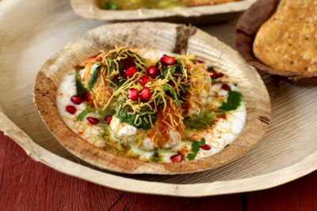
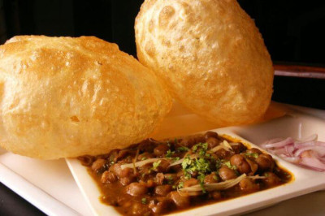
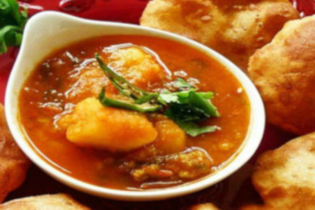
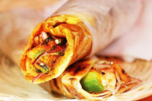
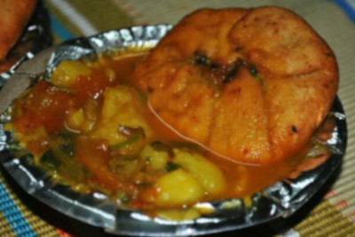
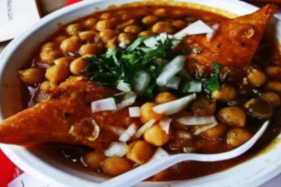
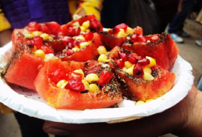
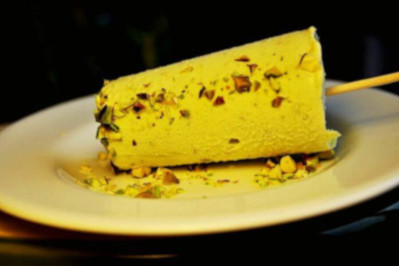
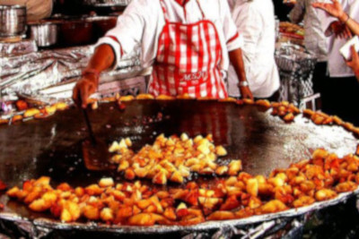

Best Street Food Places
1. Natraj Dahi Bhalla

Natraj is located near Bhai Mati Das Chowk at the turning to Chandni Chowk metro station. It was started in 1940 and is run by Inder Mohan. They have only two items on the menu – dahi bhalla and aloo tikki. Both are worth a taste.
2. Chole Bhature

Trust me, only Delhi can provide you with the best chole bhature. The extra care and less soda put to make fluffy bhature make it the best street food in Delhi. And I am not going to share the secret ingredient we put in chole to make it more rich and appetizing.
Where:Giani’s di Hatti in Chandni Chowk, Roshan’s at Karol Bagh, Sita Ram at Paharganj, Nand ke Chole Bhature in Sadar Bazaar, Baba Nagpal Corner in Lajpat Nagar and Chache di Hatti in DU
3. Golgappe
Try this street food in Delhi and you will forget Mumbai’s pani-poori and Kolkata’s puchka. The other variations of golgappe simply can’t beat the flavor that Delhi has to offer.
Where:Local market in Chandni Chowk, Rajouri Garden, Lajpat Nagar Market, CR Park, UPS Bhawan.
4.Aloo Poori

This is a very spicy and delectable Delhi cuisine. If you are in Delhi and haven’t tried this heavenly dish then you are missing out on something big. A must try for spice lovers!
Where:Chaina Ram in Chandni Chowk, Karol Bagh Market, Tewari Sweets in Lajpat Nagar and Shyam Sweets at Chawri Bazaar.
5. Rolls

The Delhi version of these rolls will keep you on your toes no matter where you try them. Every Roll wala in Delhi has his own special ingredient to make this tasty goodness all the more delish.
Where: Local joints in Kamla Nagar Market, Taste Drive at Rajouri Garden, Wah Ji Wah at Mayapuri, Nizam’s in CP, High On Rolls in Defence Colony
6. Kachori with Sabzi

This Delhi street food will make you ask for more. Teary eyes and runny nose, all the while you enjoy this spicy treat. Add a dash of coriander and chilies, and you are set!
Where:Hanuman Mandir in CP, Jung Bahadur in Chandni Chowk Metro, Old Fort, Kamla Nagar Market, Baba Nagpal Corner in Lajpat Nagar, Sharma Kachoriwala in Pitampura
7. Samose with Chole

This fried flavorsome preparation is a unique make of Delhi street food. I assure you that just one single bite of this deliciousness and it will become your first choice among junk fried food.
Where: Tilak Munjal in Pitampura, Chandni Chowk eateries and Annapurna Sweets in CR Park.
8. Bishan Swaroop Chaat

This is health plus taste at its max. Nobody knew that fruits could be made so delicious with just a few minor additions. The divine taste of fruits mixed with chana toppings can make you healthy and wise. You don’t need to be wealthy to try this goodness ;-)
Where:You will only get this food of Delhi in Chandni Chowk.
9. Kulfi

The dessert lovers will love this sweet savory. The granules of crushed dry fruits and thick texture of caramelized milk; now this is on top my list of cold desserts
Where:Roshan di Kulfi in Karol Bagh, Kuremal at Chawri Bazaar, Siya Ram Nannumal at Ajmeri Gate, Ravi Raj di Kulfi at Karol Bagh and Jain Kulfi Bhandar at Shahdara.
10. Aloo Chaat

Who doesn’t like aloo chaat? Please tell who doesn’t.
Where:taram Bazaar in Chandni Chowk, UPSC Bhawan, Nathu’s Sweet in Bengali Market, Prabhu Chaat Bhandar in Khan Market.